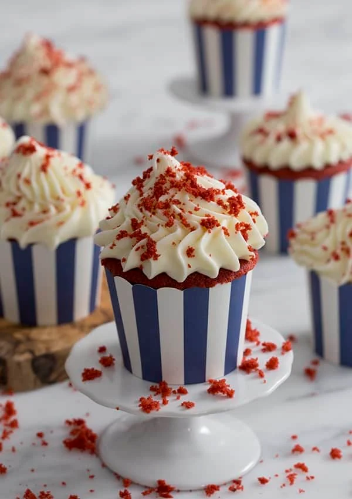

Red Velvet Cupcakes!

Look at how delicous these look!
Here are the ingredients:
- 1 and 2/3 cups all-purpose flour
- 2 tsp cocoa powder
- 1 cup granulated sugar
- 1/4 tsp baking soda
- 1 tsp baking powder
- 1/4 tsp kosher salt
- 3/4 cup unsalted butter
- 3 eggs
- 2 tbsp vanilla extract
- 3/4 cup buttermilk
- Red food coloring
For the cream cheese frosting:
- 3 sticks unsalted butter
- 1 and 1/2 ib confectioners sugar
- 16oz cream cheese
- 1 tsp vanilla extract
- 1 pinch kosher salt
Baking instructions:
- Preheat oven to 350 degrees F. Place cupcake papers in a cupcake pan.
- In a large bowl, sift the dry ingredients together. Give it a whisk to combine.
- Cut the room temperature butter into tablespoon sized pieces than add to the dry mixture on low using a paddle attachment.
- In another bowl, whisk together the eggs, buttermilk, vanilla, and food coloring.
- Slowly add the wet ingredients to the dry ingredients while mixing on low. Mix until combined, scraping the bowl as needed.
- Distribute the batter evenly into cupcake papers.
- Bake at 350F for 15-20 minutes or until springy to the touch.
For the cream cheese frosting:
- Cream the butter. Sift confectioners into a large bowl.
- Add room temperatue cream cheese to the creamed butter. Add vanilla and a pinch of salt. Beat together.
- Add the confectioners sugar to the cup at a time. Mix until combined.
- Transfer buttercream to a piping bag fitted with a star tip and apply to each cupcake.